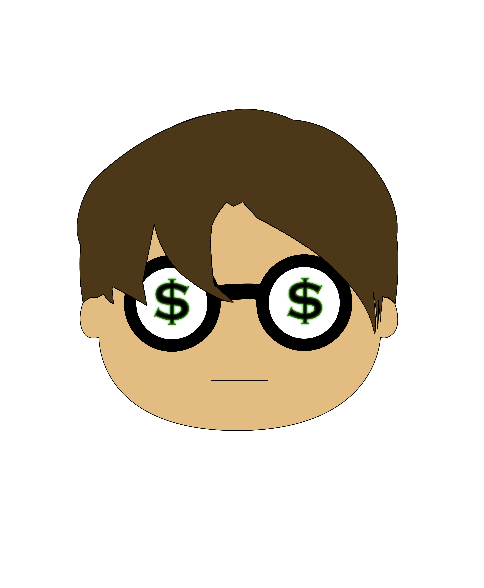

☖ Home
←

→
Line Width:
1
Round
Square
×
Choose Fonts
Georgia
Courrier (Monospace)
Arial (Sans-Serif)
Cursive
Helvitica (Sans-Serif)
Times New Roman(Serif)
◯
Ellipse
◼
Adjacent ╱
Vibrant ╱
Connected ╱
Symmetric ╱
Sticky
Maze
Pixeled ✎
Add Backgrounds
Add Icons
Add Images
Add Text
GreyScale
Undo
Try it on T-shirt
Clear
GO!!!
Resize:
ONLY Stroke
Remove Stroke
normal
xor
multiply
darken
lighten
color
overlay
screen
difference
saturation
Grab
Vertical